Performance Measure of Models
01. Accuracy
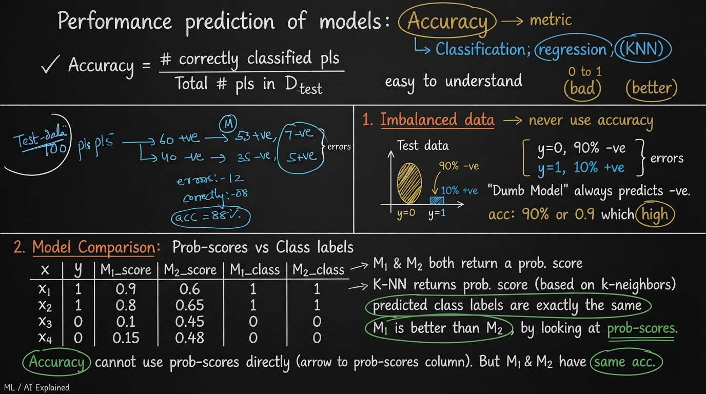
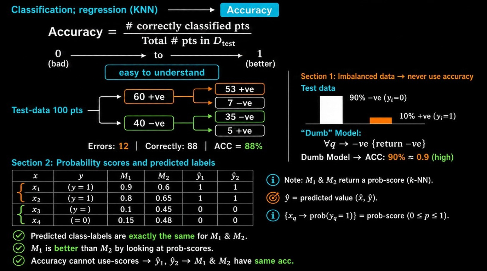
Performance Prediction of Models: Accuracy
What is Accuracy?
Accuracy is the most common and easiest-to-understand performance metric for classification (and sometimes used in regression contexts).
$$ \text{Accuracy} = \dfrac{\text{Number of correctly classified points}}{\text{Total number of points in } D_{\text{Test}}} $$
- Range: 0 to 1 (or 0% to 100%)
- Higher is better
Example:
Test set has 100 points:
- 60 actual +ve → Model predicts 53 +ve and 7 –ve
- 40 actual –ve → Model predicts 35 –ve and 5 +ve
Errors = 12
Correct = 88
Accuracy = 88%
Problem 1: Imbalanced Data
Never use Accuracy on imbalanced datasets.
Example:
- Test data: 90% –ve class, 10% +ve class
- A “dumb” model that always predicts –ve gets 90% accuracy
This high accuracy is misleading — the model has learned nothing useful.
Problem 2: Accuracy Ignores Probability Scores
Many models (including K-NN) can return a probability score instead of just a hard class label.
Example:
| Point | True y | M1 Prob | M2 Prob | M1 Pred | M2 Pred |
|---|---|---|---|---|---|
| $x_1$ | 1 | 0.9 | 0.6 | 1 | 1 |
| $x_2$ | 1 | 0.8 | 0.65 | 1 | 1 |
| $x_3$ | 0 | 0.1 | 0.45 | 0 | 0 |
| $x_4$ | 0 | 0.15 | 0.48 | 0 | 0 |
- Both models give exactly the same predicted class labels
- Therefore both have the same Accuracy
- But M1 gives much more confident and better probability scores than M2
Conclusion:
Accuracy cannot distinguish between M1 and M2, even though M1 is clearly better.
Key Takeaways
- Accuracy is simple and intuitive.
- It fails badly on imbalanced data.
- It cannot use the rich information present in probability scores.
- In many real-world problems we need better metrics (Precision, Recall, F1, Log-loss, AUC, etc.).
02. Confusion Matrix, TPR, FPR, FNR, TNR
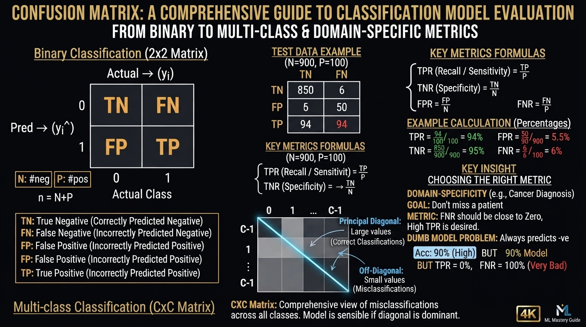
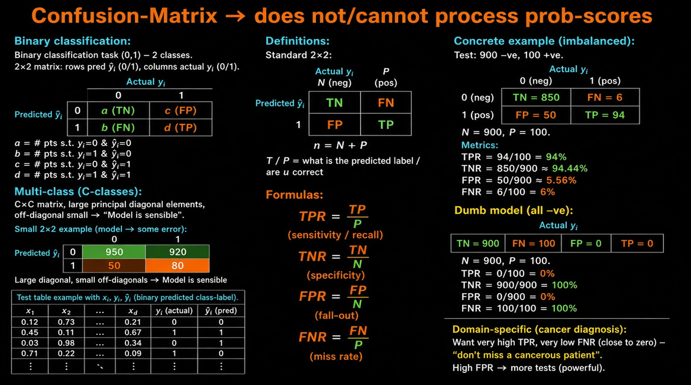
Confusion Matrix
The Confusion Matrix is a fundamental tool for evaluating
classification models.
It works with hard class labels only — it
cannot process probability scores.
Binary Classification (2 classes)
For a binary classification task ($y_i \in {0,1}$):
| Actual 0 |
Actual 1 |
|
|---|---|---|
| Predicted 0 | a | b |
| Predicted 1 | c | d |
- $a$ = number of points where actual $y_i = 0$ and predicted $\hat{y}_i = 0$
- $b$ = number of points where actual $y_i = 1$ and predicted $\hat{y}_i = 0$
- $c$ = number of points where actual $y_i = 0$ and predicted $\hat{y}_i = 1$
- $d$ = number of points where actual $y_i = 1$ and predicted $\hat{y}_i = 1$
Multi-class Confusion Matrix (C classes) — C × C
| Actual 0 |
Actual 1 |
… | Actual C-1 |
|
|---|---|---|---|---|
| Predicted 0 | large | small | … | small |
| Predicted 1 | small | large | … | small |
| ⋮ | ⋮ | ⋮ | ⋱ | ⋮ |
| Predicted C-1 | small | small | … | large |
Binary special case (2 × 2)
| Actual 0 |
Actual 1 |
|
|---|---|---|
| Predicted 0 | large | small |
| Predicted 1 | small | large |
Key idea from the notes
- Principal diagonal (correct predictions) → large values
-
Off-diagonal (errors) → small values
→ Model is sensible
Standard Terminology (TP, FP, FN, TN)
| Actual 0 |
Actual 1 |
|
|---|---|---|
| Predicted 0 | TN | FN |
| Predicted 1 | FP | TP |
| Term | Full Form | Meaning |
|---|---|---|
| TP | True Positive | Actual = 1, Predicted = 1 |
| TN | True Negative | Actual = 0, Predicted = 0 |
| FP | False Positive | Actual = 0, Predicted = 1 |
| FN | False Negative | Actual = 1, Predicted = 0 |
- $N$ = Total number of actual negatives = TN + FP
- $P$ = Total number of actual positives = TP + FN
- $n = N + P$ (total points)
Rates Derived from Confusion Matrix
$$ \text{TPR} = \dfrac{\text{TP}}{P} \quad \text{(True Positive Rate / Recall / Sensitivity)} $$
$$ \text{TNR} = \dfrac{\text{TN}}{N} \quad \text{(True Negative Rate / Specificity)} $$
$$ \text{FPR} = \dfrac{\text{FP}}{N} \quad \text{(False Positive Rate)} $$
$$ \text{FNR} = \dfrac{\text{FN}}{P} \quad \text{(False Negative Rate)} $$
Example (Imbalanced Data)
Test set: 900 negatives + 100 positives
Confusion Matrix
| Actual 0 |
Actual 1 |
|
|---|---|---|
| Predicted 0 |
850 TN |
6 FN |
| Predicted 1 |
50 FP |
94 TP |
|
N 900 |
P 100 |
Rates
| Metric | Formula | Math | Value | Direction |
|---|---|---|---|---|
| TPR | $\dfrac{TP}{P}$ | $ \dfrac{94}{100} \times 100% $ | ${\mathbf{94%}}$ | ⬆ Good |
| TNR | $\dfrac{TN}{N}$ | $ \dfrac{850}{900} \times 100% $ | $\approx {\mathbf{94%}}$ | ⬆ Good |
| FPR | $\dfrac{FP}{N}$ | $ \dfrac{50}{900} \times 100% $ | $\approx {\mathbf{6%}}$ | ⬇ Good |
| FNR | $\dfrac{FN}{P}$ | $ \dfrac{6}{100} \times 100% $ | $ {\mathbf{6%}}$ | ⬇ Good |
Dumb Model Example (Always Predicts Negative)
| Actual 0 |
Actual 1 |
|
|---|---|---|
| Predicted 0 |
900 TN |
100 FN |
| Predicted 1 |
0 FP |
0 TP |
|
N 900 |
P 100 |
Rates
| Metric | Formula | Math | Value | Direction |
|---|---|---|---|---|
| TPR | $\dfrac{TP}{P}$ | $ \dfrac{0}{100} \times 100% $ | ${\mathbf{0%}}$ | ⬇ Bad |
| TNR | $\dfrac{TN}{N}$ | $ \dfrac{900}{900} \times 100% $ | $ {\mathbf{100%}} $ | ⬆ Good |
| FPR | $\dfrac{FP}{N}$ | $ \dfrac{0}{900} \times 100% $ | $ {\mathbf{0%}} $ | ⬇ Good |
| FNR | $\dfrac{FN}{P}$ | $ \dfrac{100}{100} \times 100% $ | $ {\mathbf{100%}}$ | ⬆ Bad |
Even though Accuracy looks high (100%), the model is useless (TPR = 0).
Multi-class Classification ($C$ classes)
Confusion Matrix becomes a $C \times C$ matrix.
- Large values on the principal diagonal → Model is sensible
- Small off-diagonal values → Few mistakes
- Ideal case: almost all mass concentrated on the diagonal
Domain-Specific Importance (Medical Example)
Task: Diagnose Cancer / Not Cancer
Critical requirement:
Do not miss a cancerous patient.
→ We want:
- Very high TPR
- Very low FNR (close to zero)
If FPR is high → more patients will be sent for further (expensive/powerful) tests, which is usually acceptable.
Key Insight:
In medical diagnosis, False Negatives are far more dangerous than False Positives.
Always look at TPR and FNR carefully in such domains.
03. Precision and Recall, F1-Score
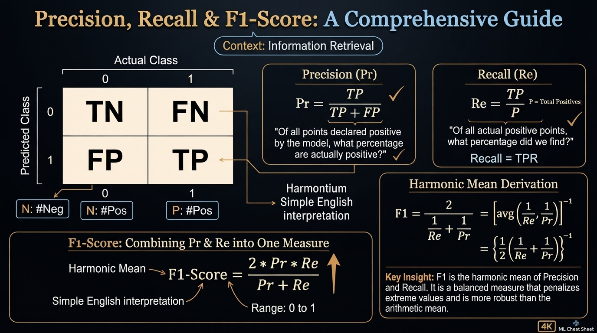
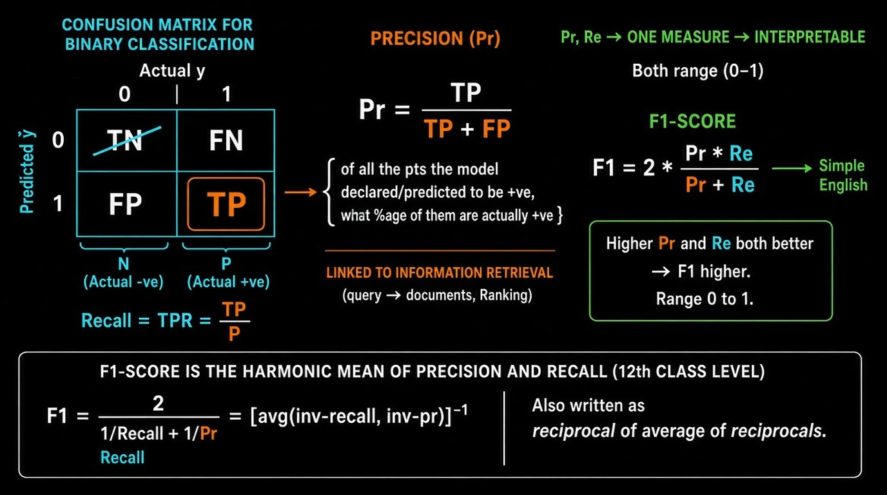
Precision, Recall & F1-Score
These metrics are defined with respect to the positive class.
They originally come from Information Retrieval.
Precision (Pr)
$$ \text{Precision} = \dfrac{\text{TP}}{\text{TP} + \text{FP}} $$
English meaning:
Of all the points the model declared / predicted to be positive, what
percentage of them are actually positive?
Recall (Re)
$$ \text{Recall} = \text{TPR} = \dfrac{\text{TP}}{P} = \dfrac{\text{TP}}{\text{TP} + \text{FN}} $$
English meaning:
Of all the actual positive points, what percentage did the model correctly find?
F1-Score
We often want one single interpretable number that combines both Precision and Recall.
$$ \text{F1-Score} = 2 \times \dfrac{\text{Precision} \times \text{Recall}}{\text{Precision} + \text{Recall}} $$
- Range: 0 to 1
- Higher is better
- Both Precision ↑ and Recall ↑ → F1 ↑
Why Harmonic Mean?
F1-Score is the harmonic mean of Precision and Recall.
$$ \text{F1} = \dfrac{2}{\dfrac{1}{\text{Recall}} + \dfrac{1}{\text{Precision}}} = \left[ \text{average of } \left( \dfrac{1}{\text{Recall}}, \dfrac{1}{\text{Precision}} \right) \right]^{-1} $$
Or equivalently:
$$ \text{F1} = \left( \dfrac{1}{2} \left( \dfrac{1}{\text{Recall}} + \dfrac{1}{\text{Precision}} \right) \right)^{-1} $$
Why harmonic mean instead of arithmetic mean?
Harmonic mean punishes extreme values more strongly.
If either Precision or Recall is very low, F1-Score will also be low.
Quick Summary
| Metric | Formula | Focus |
|---|---|---|
| Precision | TP / (TP + FP) | Correctness of positive predictions |
| Recall | TP / (TP + FN) | Coverage of actual positives |
| F1-Score | $2 \times \frac{\text{Pr} \times \text{Re}}{\text{Pr} + \text{Re}}$ | Balance between Precision & Recall |
Key Insight:
When you care about both “not making false alarms” (Precision) and “not missing real
cases” (Recall), use F1-Score.
04. Receiver Operating Characteristic (ROC) Curve and AUC
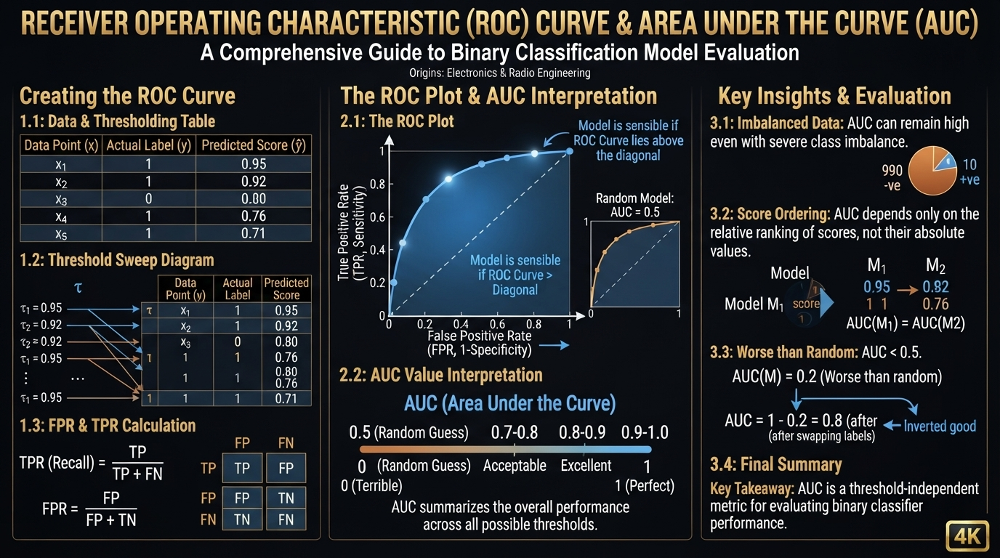
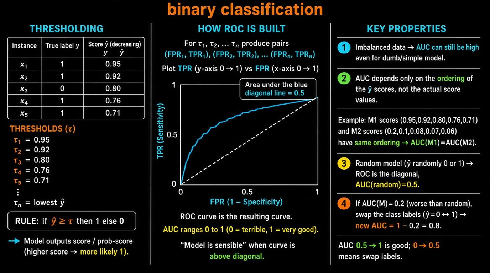
ROC and AUC are used for binary classification.
Originally developed by electronics & radio engineers.
How ROC is Constructed
A model outputs a score (probability or decision score) for each point.
We sort the points in decreasing order of the predicted score $\hat{y}$.
Example:
| Point | Actual y | Score $\hat{y}$ |
|---|---|---|
| $x_1$ | 1 | 0.95 |
| $x_2$ | 1 | 0.92 |
| $x_3$ | 0 | 0.80 |
| $x_4$ | 1 | 0.76 |
| $x_5$ | 1 | 0.71 |
We now choose different thresholds $\tau$.
Thresholding rule:
- If $\hat{y} \ge \tau$ → predict 1
- Else → predict 0
For every threshold we get a pair (FPR, TPR).
Example thresholds:
- $\tau_1 = 0.95$
- $\tau_2 = 0.92$
- …
- $\tau_n$
This gives us a sequence of points: $$ (\text{FPR}_1, \text{TPR}_1),\ (\text{FPR}_2, \text{TPR}_2),\ \dots,\ (\text{FPR}_n, \text{TPR}_n) $$
ROC Curve
Plot TPR (y-axis) vs FPR (x-axis).
- The curve starts near (0,0) and ends at (1,1)
- A good model’s curve stays close to the top-left corner
- The diagonal line (random model) has Area = 0.5
AUC – Area Under the ROC Curve
$$ \text{AUC} \in [0, 1] $$
| AUC Value | Meaning |
|---|---|
| close to 1 | Very good model |
| = 0.5 | Random model |
| < 0.5 | Worse than random |
| close to 0 | Terrible (predictions are inverted) |
Important Properties of AUC
1. Works reasonably well even on imbalanced data
(AUC can still be high for a simple/dumb model if the ranking is decent)
2. AUC depends only on the ranking / ordering of the scores
It does not depend on the absolute values of the scores.
Example:
If two models produce scores that give the same ordering of points,
then
$$ \text{AUC}(M_1) = \text{AUC}(M_2) $$
even if the actual score values are very different.
3. Random model
A model that randomly predicts 0 or 1 has
$$ \text{AUC} = 0.5 $$
4. AUC < 0.5
If a model has AUC = 0.2, it is worse than random.
Simply swap the class labels (predict the opposite) and the new AUC
becomes
$$ 1 - 0.2 = 0.8 $$
Visual Summary
- X-axis → FPR (0 to 1)
- Y-axis → TPR (0 to 1)
- Diagonal line → Random classifier (AUC = 0.5)
- Curve above diagonal → Better than random
- Curve below diagonal → Worse than random (can be fixed by swapping labels)
Key Insight:
AUC measures how well the model ranks positive points higher than
negative points, independent of any particular threshold.
Why Use AUC?
1. Threshold Independent
Most metrics (Accuracy, Precision, Recall, F1) depend on a specific threshold.
AUC evaluates the model across all possible thresholds.
→ Gives a complete picture of model performance.
2. Works Well with Imbalanced Data
Accuracy fails badly on imbalanced datasets.
AUC is much more robust and still gives meaningful scores even when classes are highly imbalanced.
3. Focuses on Ranking Quality
AUC only cares about the ordering of the predicted scores.
It measures:
How well does the model rank positive points higher than negative points?
This is extremely useful in ranking-oriented applications (search, recommendation, risk scoring, etc.).
4. Scale Invariant
AUC does not depend on the absolute values of the scores.
Two models that produce different score ranges but the same ranking will have the same AUC.
- AUC = 0.5 → Random model
- AUC > 0.5 → Better than random
- AUC close to 1 → Excellent model
- AUC < 0.5 → Worse than random (just invert the predictions)
6. Widely Used & Comparable
AUC is one of the most standard metrics in binary classification.
It allows easy comparison between different models.
5. Easy Interpretation
When AUC is Especially Useful
- Imbalanced datasets
- When you care about ranking more than a single operating point
- When you have not yet decided the final threshold
- Probabilistic models (Logistic Regression, K-NN with probability scores, etc.)
Key Takeaway:
Use AUC when you want a single, threshold-independent, ranking-based measure of how well
your model separates the two classes.
05. Log-Loss
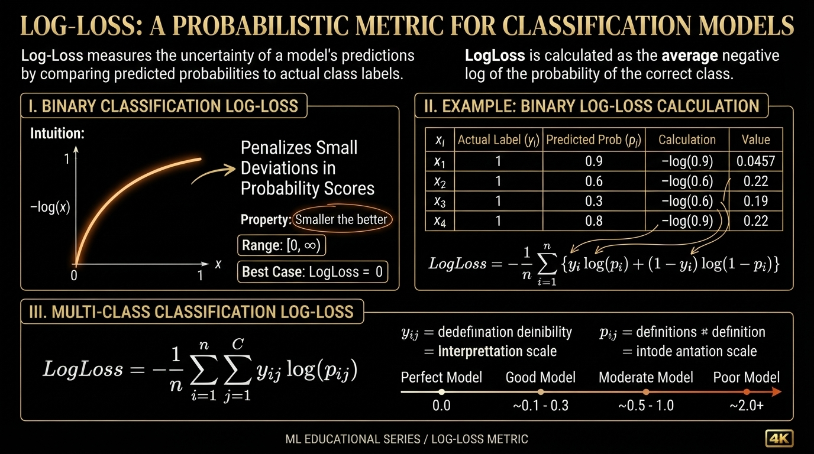
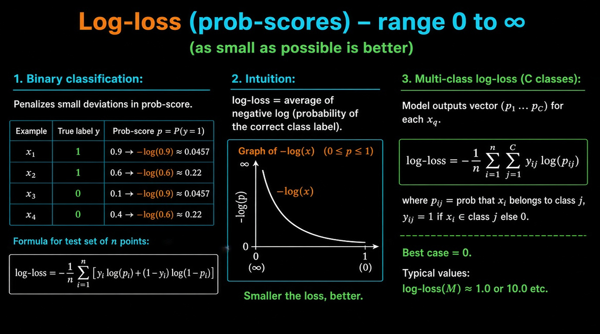
Log-Loss is a metric that works with probability scores.
- Range: $0$ to $\infty$
- Smaller is better
- Heavily penalizes confident but wrong predictions
Binary Classification
Let the model output a probability $p_i = \hat{y}_i$ for the positive class.
Formula:
$$ \text{Log-Loss} = -\dfrac{1}{n} \sum_{i=1}^{n} \Big[ y_i \log(p_i) + (1 - y_i) \log(1 - p_i) \Big] $$
Example:
| Point | Actual $y$ | Predicted $p$ | Contribution |
|---|---|---|---|
| $x_1$ | 1 | 0.9 | $-\log(0.9) \approx 0.0457$ |
| $x_2$ | 1 | 0.6 | $-\log(0.6) \approx 0.22$ |
| $x_3$ | 0 | 0.1 | $-\log(0.9) \approx 0.0457$ |
| $x_4$ | 0 | 0.4 | $-\log(0.6) \approx 0.22$ |
Average of these values = Log-Loss of the model.
Intuition
Log-Loss = Average of negative log of the probability of the correct class.
- If the model is very confident and correct ($p \approx 1$), loss $\approx 0$
- If the model is very confident and wrong ($p \approx 0$ for the true class), loss $\to \infty$
Graph of $-\log(x)$:
- As $x \to 0$, $-\log(x) \to \infty$
- As $x \to 1$, $-\log(x) \to 0$
Multi-class Log-Loss
For $C$ classes, the model outputs a probability distribution $(p_1, p_2, \dots, p_C)$.
$$ \text{Log-Loss} = -\dfrac{1}{n} \sum_{i=1}^{n} \sum_{j=1}^{C} y_{ij} \log(p_{ij}) $$
Where:
- $y_{ij} = 1$ if point $x_i$ belongs to class $j$, else 0
- $p_{ij}$ = predicted probability that $x_i$ belongs to class $j$
Best case: Log-Loss = 0 (model always predicts probability 1 for the correct class)
Worst case: Log-Loss $\to \infty$
Key Properties
| Property | Value / Behavior |
|---|---|
| Range | $[0, \infty)$ |
| Best possible value | 0 |
| Sensitive to confidence | Yes (strongly penalizes overconfidence) |
| Works with | Probability scores |
| Suitable for | Binary & Multi-class |
Key Insight:
Log-Loss not only checks whether the prediction is correct, but also
how confident the model is. A model that is correct but unsure is
preferred over a model that is confident and wrong.
06. R² : Coefficient of Determination
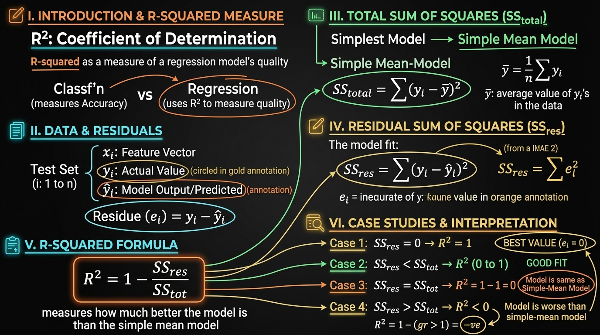
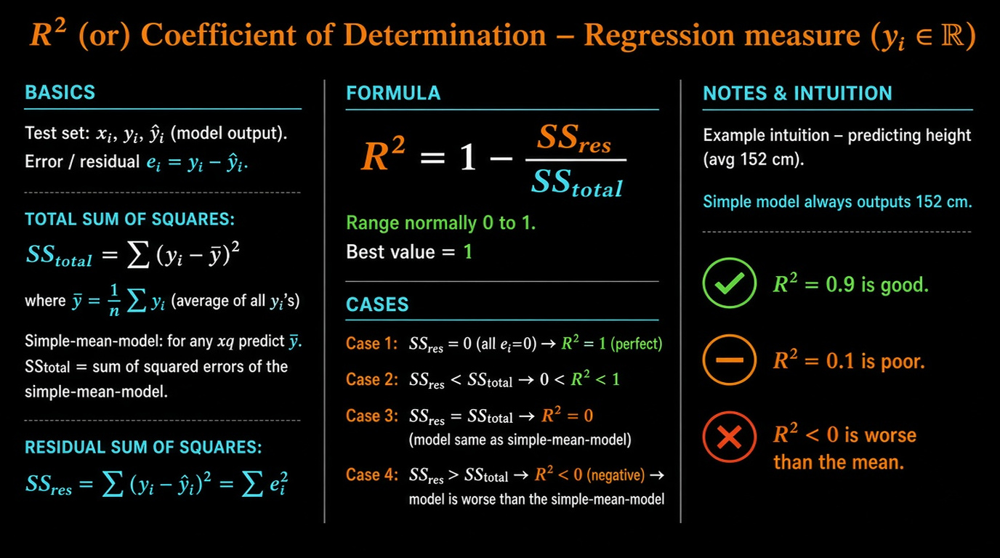
R² is a performance metric used for Regression problems (where $y_i \in \mathbb{R}$).
Error / Residual
For each point:
$$ e_i = y_i - \hat{y}_i $$
- $y_i$ = actual value
- $\hat{y}_i$ = model prediction
- $e_i$ = residual (error)
Total Sum of Squares (SS_total)
$$ \text{SS}{\text{total}} = \sum{i=1}^{n} (y_i - \bar{y})^2 $$
Where
$$ \bar{y} = \dfrac{1}{n} \sum_{i=1}^{n} y_i $$
Interpretation:
SS_total is the sum of squared errors of the simplest possible model —
the model that always predicts the mean $\bar{y}$.
Example:
If average height in training data is 152 cm, the simple mean model always predicts 152
cm for any query point.
Residual Sum of Squares (SS_res)
$$ \text{SS}{\text{res}} = \sum{i=1}^{n} (y_i - \hat{y}i)^2 = \sum{i=1}^{n} e_i^2 $$
This is the sum of squared errors of our actual model.
Definition of R²
$$ R^2 = 1 - \dfrac{\text{SS}{\text{res}}}{\text{SS}{\text{total}}} $$
Different Cases of R²
| Case | Condition | R² Value | Meaning |
|---|---|---|---|
| 1 | SS_res = 0 | $R^2 = 1$ | Perfect model (all residuals zero) |
| 2 | SS_res < SS_total | $0 < R^2 < 1$ | Model is better than the simple mean model |
| 3 | SS_res = SS_total | $R^2 = 0$ | Model is exactly as good as the mean model |
| 4 | SS_res > SS_total | $R^2 < 0$ | Model is worse than the simple mean model |
- Best possible value: $R^2 = 1$
- $R^2$ can be negative (unlike many classification metrics)
Key Insights
- R² tells us how much better our model is compared to simply predicting the average.
- $R^2 = 0.9$ means the model explains 90% of the variance in the target.
- $R^2 = 0.1$ means the model is only slightly better than predicting the mean.
- Negative R² is a strong warning that the model is performing poorly.
07. Median Absolute Deviation (MAD)
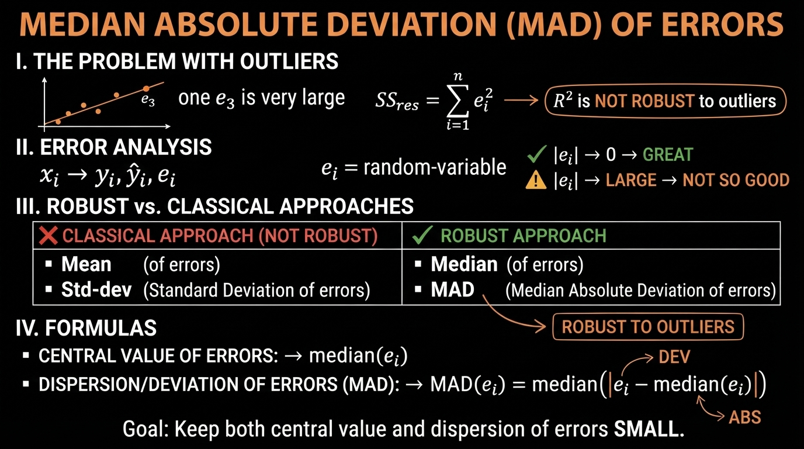
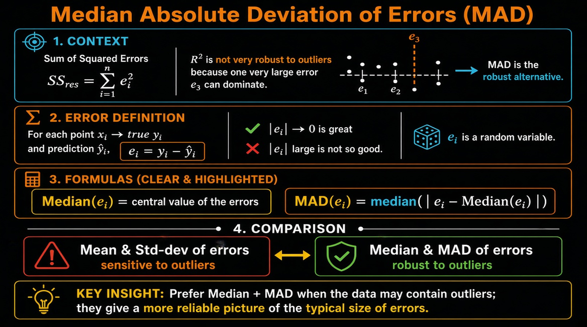
Median Absolute Deviation (MAD) of Errors
Why Do We Need MAD?
We know:
$$ \text{SS}{\text{res}} = \sum{i=1}^{n} e_i^2 $$
If even one residual $e_i$ is very large (outlier), it heavily influences SS_res (because of squaring).
→ R² is not very robust to outliers.
Residuals as a Random Variable
For each point:
$$ x_i ;\to; y_i,; \hat{y}_i ;\to; e_i = y_i - \hat{y}_i $$
- $e_i$ is treated as a random variable
- Ideal case: all $|e_i| \to 0$ (great model)
- If $|e_i|$ are large → model is not good
Median and MAD
Instead of using mean and standard deviation (which are sensitive to outliers), we use:
- Median of the errors → central value of errors
- MAD (Median Absolute Deviation)
$$ \text{MAD}(e_i) = \text{Median}\big( |e_i - \text{Median}(e_i)| \big) $$
Comparison
| Measure | Sensitive to Outliers? | Robust Alternative |
|---|---|---|
| Mean | Yes | Median |
| Standard Deviation | Yes | MAD |
Key Insight
- Mean & Standard Deviation → affected by extreme residuals
- Median & MAD → robust to outliers
When the dataset contains outliers in the target variable (or large prediction errors), prefer looking at Median of errors and MAD instead of relying only on R² or SS_res.
08. Distribution of Errors
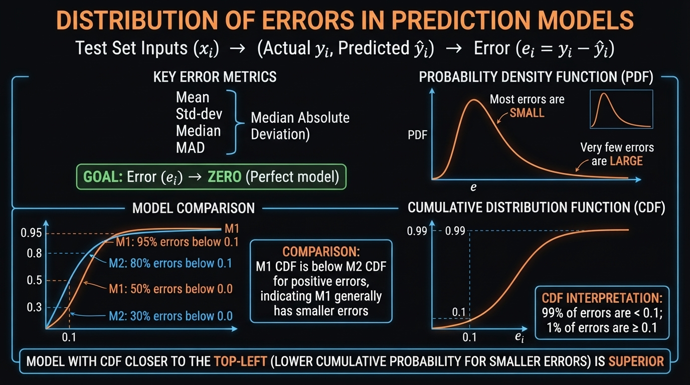
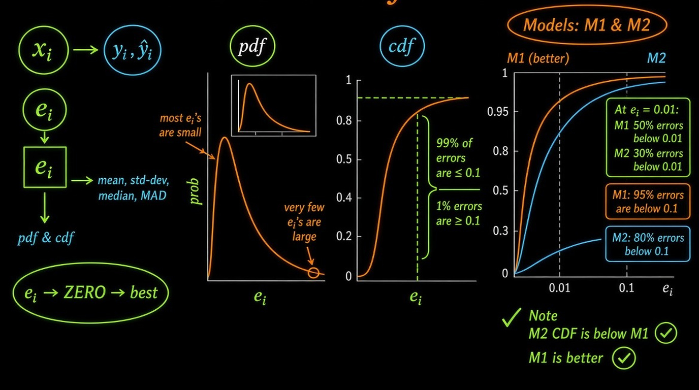
09. Assignment-3: Apply k-Nearest Neighbor
Assignment.ipynb
10. Revision Questions
Questions (clickable to respective answers)
- What is Accuracy?
- Explain about Confusion matrix, TPR, FPR, FNR, TNR?
- What do you understand about Precision & recall, F1-score? How would you use it?
- What is the ROC Curve and what is AUC (a.k.a. AUROC)?
- What is Log-loss and how it helps to improve performance?
- Explain about R-Squared / Coefficient of determination.
- Explain about Median absolute deviation (MAD)? Importance of MAD?
- Define Distribution of errors?
1. What is Accuracy?
Accuracy is the simplest classification metric. It measures the proportion of correctly predicted instances out of the total number of instances.
$ \text{Accuracy} = \frac{\text{Number of correct predictions}}{\text{Total number of predictions}} = \frac{TP + TN}{TP + TN + FP + FN} $
When it is useful:
- Classes are roughly balanced.
- All classes are equally important.
Limitation:
- On imbalanced datasets, accuracy can be misleading. A model that always predicts the majority class can achieve high accuracy while completely failing on the minority class.
2. Explain about Confusion matrix, TPR, FPR, FNR, TNR?
Confusion Matrix is a table that summarizes the performance of a classification model by showing the counts of:
| Predicted Positive | Predicted Negative | |
|---|---|---|
| Actual Positive | True Positive (TP) | False Negative (FN) |
| Actual Negative | False Positive (FP) | True Negative (TN) |
Derived rates:
-
TPR (True Positive Rate) / Recall / Sensitivity
$ TPR = \frac{TP}{TP + FN} $
Proportion of actual positives correctly identified. -
FPR (False Positive Rate)
$ FPR = \frac{FP}{FP + TN} $
Proportion of actual negatives incorrectly classified as positive. -
FNR (False Negative Rate)
$ FNR = \frac{FN}{TP + FN} = 1 - TPR $
Proportion of actual positives missed by the model. -
TNR (True Negative Rate) / Specificity
$ TNR = \frac{TN}{TN + FP} = 1 - FPR $
Proportion of actual negatives correctly identified.
These four rates fully describe the model’s behavior at a given threshold.
3. What do you understand about Precision & recall, F1-score? How would you use it?
Precision (Positive Predictive Value): $ \text{Precision} =
\frac{TP}{TP + FP} $
Of all the instances the model predicted as positive, how many were actually positive?
Recall (TPR / Sensitivity): $ \text{Recall} = \frac{TP}{TP + FN} $
Of all the actual positive instances, how many did the model correctly find?
F1-Score is the harmonic mean of Precision and Recall: $ F1 = 2 \times \frac{\text{Precision} \times \text{Recall}}{\text{Precision} + \text{Recall}} $
How to use them:
- High Precision needed when False Positives are costly (e.g., spam detection, recommending expensive medical tests).
- High Recall needed when False Negatives are costly (e.g., cancer detection, fraud detection, safety-critical systems).
- F1-Score is useful when you want a single number that balances both, especially on imbalanced datasets.
- You can also look at Precision-Recall curves and Average Precision when classes are highly imbalanced (often better than ROC in such cases).
4. What is the ROC Curve and what is AUC (a.k.a. AUROC)?
ROC Curve (Receiver Operating Characteristic Curve) plots:
- X-axis: False Positive Rate (FPR)
- Y-axis: True Positive Rate (TPR)
It is generated by varying the classification threshold from 0 to 1 and recording the (FPR, TPR) pairs.
AUC (Area Under the ROC Curve) / AUROC:
- Measures the overall ability of the model to discriminate between positive and negative classes, independent of any particular threshold.
- AUC = 1.0 → Perfect classifier
- AUC = 0.5 → Random classifier (no discriminative power)
- AUC < 0.5 → Worse than random (can be inverted)
Advantages:
- Threshold-independent.
- Works reasonably well even with moderate class imbalance.
- Easy to compare multiple models.
Note: On extremely imbalanced datasets, the Precision-Recall curve is often more informative than ROC.
5. What is Log-loss and how it helps to improve performance?
Log-loss (also called Binary Cross-Entropy or Logistic Loss) measures the performance of a classification model whose output is a probability value between 0 and 1.
For binary classification: $ \text{Log-loss} = -\frac{1}{N} \sum_{i=1}^{N} \left[ y_i \log(p_i) + (1 - y_i) \log(1 - p_i) \right] $
where $ y_i $ is the true label (0 or 1) and $ p_i $ is the predicted probability of class 1.
Key properties:
- Heavily penalizes confident but wrong predictions (e.g., predicting 0.99 when the true label is 0).
- Rewards well-calibrated probability estimates.
How it helps improve performance:
- Forces the model to output meaningful probabilities rather than just hard labels.
- Encourages the model to be less overconfident on wrong predictions.
- Commonly used as the loss function for Logistic Regression, Neural Networks, Gradient Boosting (with logistic objective), etc.
- Optimizing log-loss usually leads to better-calibrated models and improved ranking metrics (AUC, etc.).
6. Explain about R-Squared / Coefficient of determination.
R-Squared ($ R^2 $) measures the proportion of variance in the dependent variable that is predictable from the independent variables.
$ R^2 = 1 - \frac{SS_{\text{res}}}{SS_{\text{tot}}} = 1 - \frac{\sum (y_i - \hat{y}_i)^2}{\sum (y_i - \bar{y})^2} $
- $ SS_{\text{res}} $ = Residual Sum of Squares (error of the model)
- $ SS_{\text{tot}} $ = Total Sum of Squares (variance of the target)
Interpretation:
- $ R^2 = 1 $ → Perfect fit
- $ R^2 = 0 $ → Model is no better than predicting the mean
- $ R^2 < 0 $ → Model is worse than predicting the mean
Limitations:
- Always increases when you add more features (even useless ones) → use Adjusted $ R^2 $ instead.
- Does not tell you whether the model is biased or whether residuals are well-behaved.
- Sensitive to outliers.
7. Explain about Median absolute deviation (MAD)? Importance of MAD?
Median Absolute Deviation (MAD) is a robust measure of statistical dispersion:
$ \text{MAD} = \text{median} \left( |x_i - \text{median}(X)| \right) $
Importance:
- Extremely robust to outliers (unlike standard deviation, which is heavily influenced by extreme values).
- Used for robust outlier detection (e.g., modified Z-score = $ 0.6745 \times \frac{x_i - \text{median}}{\text{MAD}} $).
- Preferred when data is skewed or contains outliers.
- Commonly used in robust statistics and as a scale estimator in robust regression and anomaly detection algorithms.
A common rule of thumb: points with modified Z-score > 3.5 are considered potential outliers.
8. Define Distribution of errors?
Distribution of errors (or residual distribution) refers to the statistical distribution of the prediction errors $ e_i = y_i - \hat{y}_i $.
In a well-behaved regression model, we typically expect:
- Errors to be approximately normally distributed (for many classical statistical tests and confidence intervals).
- Errors to have mean ≈ 0 (no systematic bias).
- Errors to be homoscedastic (constant variance across the range of predictions).
- No strong patterns or autocorrelation in the residuals.
Why it matters:
- Helps diagnose model misspecification (non-linearity, missing features, heteroscedasticity).
- Guides choice of evaluation metrics (MAE vs MSE vs Huber loss).
- Important for uncertainty quantification and prediction intervals.
- Visual tools: residual histograms, Q-Q plots, residual vs fitted plots.
If errors are heavily skewed or have heavy tails, robust metrics (MAE, MAD, quantile loss) or transformations may be more appropriate than MSE / $ R^2 $.